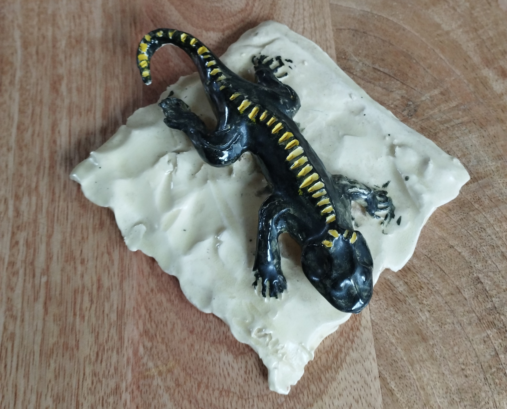
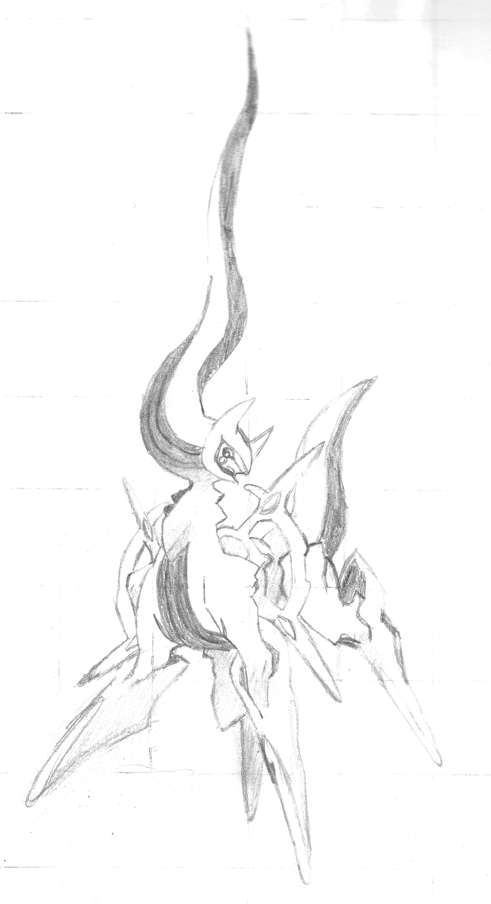
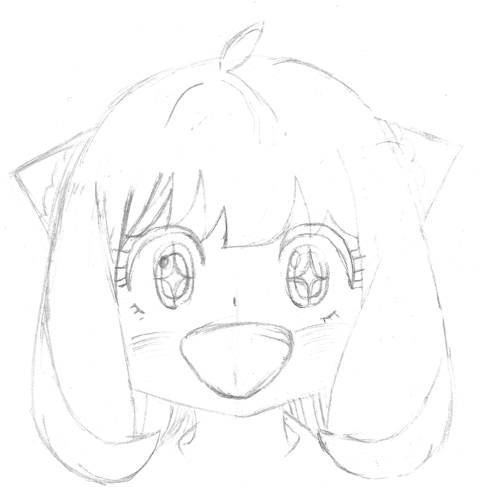

Après avoir trouvé ma police d'écriture, je l'ai modifié sur illustrator pour qu'elle est cet aspect caligraphie que j'apprécie ( toutes les ressources tels que le fichier Illustrator, Photoshop, Blender (...) se trouvent sur le lien Milanote que j'ai mis plus haut). J'ai ensuite trouvé mes couleurs, pour se faire je suis allé sur le site internet "Coolors", j'y ai trouvé ce vert qui représente bien ma marque par cette teinte rappelant la nature, le frais et l'aventure. Puis pour la deuxième couleur j'ai juste choisi la couleur complémentaire de ma première couleur.


Une fois l'identité de ma marque définit, je voulais voir ce que ça pourrait donner si on produisait vraiment une bouteille, j'en ai alors profité pour essayé Blender. J'ai moi même désigné l'étiquette de la bouteille. Vous pouvoir voir résultat final de la bouteille avec l'étiquette au dessus, c'est la première image de la partie "Marque Fictive".
PROJETS DIVERSES
PROJET VIDÉO EN ESPAGNOL
Voici une vidéo réalisé pour un ancien devoir d'espagnol que moi et mon groupe avions eu à faire, c'est moi qui me suis occupé du montage sur Filmora, la consigne était de faire une vidéo drôle tout en réalisant une recette en espagnol. J'ai choisi d'envoyer cette vidéo pour montrer que j'ai une petite base en montage vidéo.
MINI-JEU GODOT
Il y'a 1 ou 2 ans j'ai voulu voir à quoi ressemblait un logiciel de création de jeux vidéo, j'ai alors installé Godot et décidé de regarder un tutoriel pour faire un petit jeu de plateforme, le langage de programmation de Godot est le GDScript, il ressemble énormément au C# de Unity. Le .godot est accessible sur le Milanote (pas le jeu, malheureusement les .exe ne sont pas autorisés sur Milanote)
DESSINS
MES DESSINS/SCULPTURE
Depuis petit, j'adore dessiné, même si je ne suis pas très régulier, il m'arrive des fois d'avoir de fortes envie de dessiner. J'ai fait une sélection de dessins que j'affectionne ci-dessous, parmis ceux-ci se trouve aussi la photo d'une sculpture datant d'un cours de poterie





